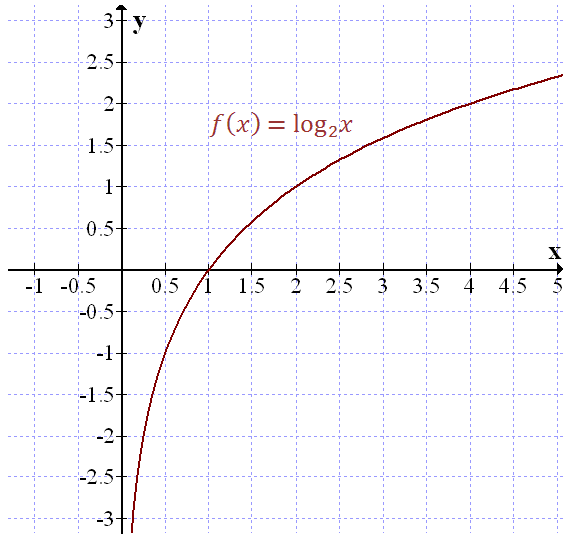
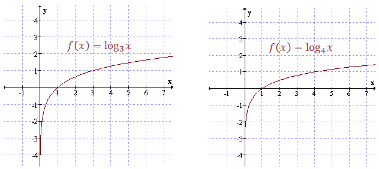
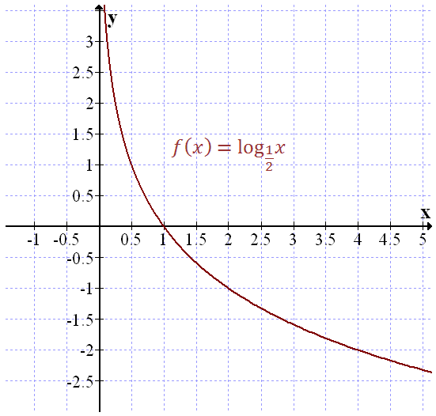
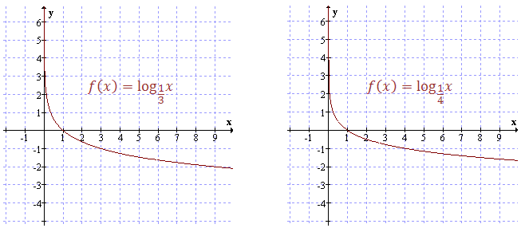

Funkcja logarytmiczna ma wzór: \[f(x)=\log_ax\] Zakładamy przy tym, że \(a \gt 0\),
\(a\ne 1\), \(x\gt 0\).
Wykresem tej funkcji jest krzywa która zawsze przecina oś \(Ox\) dla
argumentu \(x = 1\).
Zasadniczy kształt wykresu zależy do tego czy \(a \gt 1\) czy \(a \lt 1\).
Pokażemy oddzielnie te dwa przypadki.
Narysujemy wykres funkcji \(f(x) =
\log_2x\).
Na początek obliczmy wartości tej funkcji dla kilku przykładowych argumentów \(x\).
Sporządźmy zatem odpowiednią tabelkę:
| \(x\) |
\(\frac{1}{4}\) |
\(\frac{1}{2}\) |
\(1\) |
\(2\) |
\(4\) |
| \(y=\log_2x\) |
\(-2\) |
\(-1\) |
\(0\) |
\(1\) |
\(2\) |
Zatem wykres tej funkcji będzie wyglądał następująco: 
Bardzo podobnie wyglądają wykresy innych funkcji logarytmicznych o podstawie \(a
\gt 1\). Przykładowo:  Własności
funkcji logarytmicznej o podstawie \(a \gt 1\):
- Dziedzina: \(\mathbb{R}^+ \).
- Zbiór wartości: \(\mathbb{R} \).
- Monotoniczność: funkcja jest rosnąca.
- Różnowartościowość: funkcja jest różnowartościowa.
- Miejsca zerowe: \(x = 1\).
- Parzystość: nie jest.
- Nieparzystość: nie jest.
Teraz zobaczymy jak wyglądają funkcje logarytmiczne o podstawie \(a \lt 1\).
Narysujemy wykres funkcji \(f(x) = \log_{\frac{1}{2}}x\).
Na początek
obliczmy wartości tej funkcji dla kilku przykładowych argumentów \(x\). Sporządźmy zatem odpowiednią
tabelkę:
| \(x\) |
\(\frac{1}{4}\) |
\(\frac{1}{2}\) |
\(1\) |
\(2\) |
\(4\) |
| \(y=\log_{\frac{1}{2}}x\) |
\(2\) |
\(1\) |
\(0\) |
\(-1\) |
\(-2\) |
Zatem wykres tej funkcji będzie wyglądał następująco: 
Bardzo podobnie wyglądają wykresy innych funkcji logarytmicznych o podstawie \(a
\lt 1\). Przykładowo:  Własności
funkcji logarytmicznej o podstawie \(a \lt 1\):
- Dziedzina: \(\mathbb{R}^+ \).
- Zbiór wartości: \(\mathbb{R}\).
- Monotoniczność: funkcja jest malejąca.
- Różnowartościowość: funkcja jest różnowartościowa.
- Miejsca zerowe: \(x = 1\).
- Parzystość: nie jest.
- Nieparzystość: nie jest.